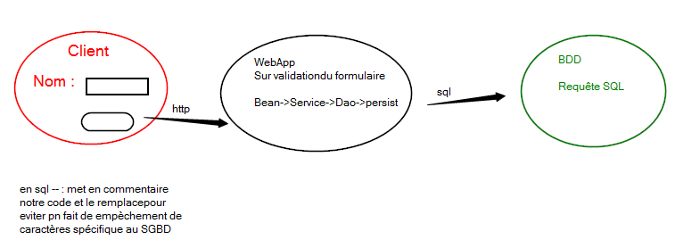
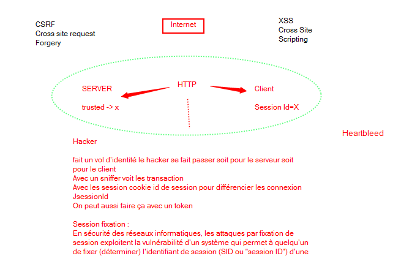

La sécurité est souvent posée au niveau réseau.
code pin généré par des calculettes, permet de se connecter àun environnement sécurisé machine virtuelle ou ssh.
Niveau applicatif rare besoin de sécurité car géré par les parfeu
Authentification : savoir reconnaître un user de confiance
Authorisation : trier sur les droits de ce que l'on peut faire
Vérification sur le serveur


Le navigateur n'envoie plus de requête http strict http : HSTS
kick jacking : fenêtre extérieure à l'appli qui renvoie sur une action
CSRF : client envoie une 1er requête le serveur renvoie un header de type CSRF et une clé qui ne peut pas être devinée.
Créé avec HelpNDoc Personal Edition: Créer des livres électroniques facilement